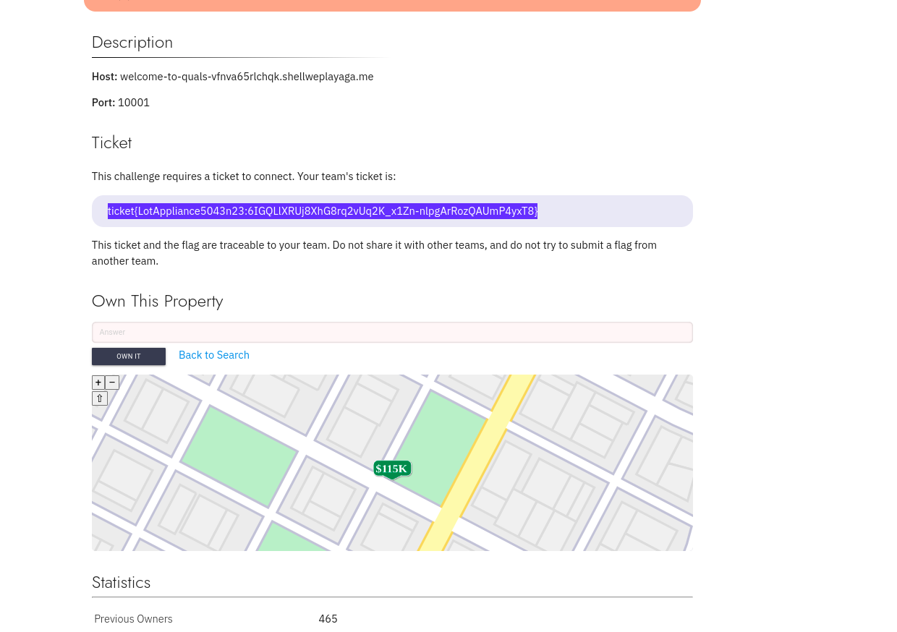
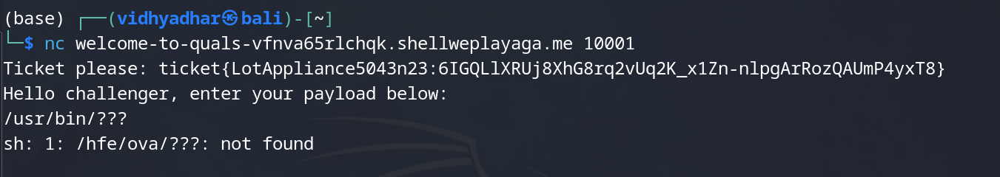
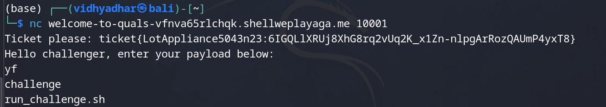
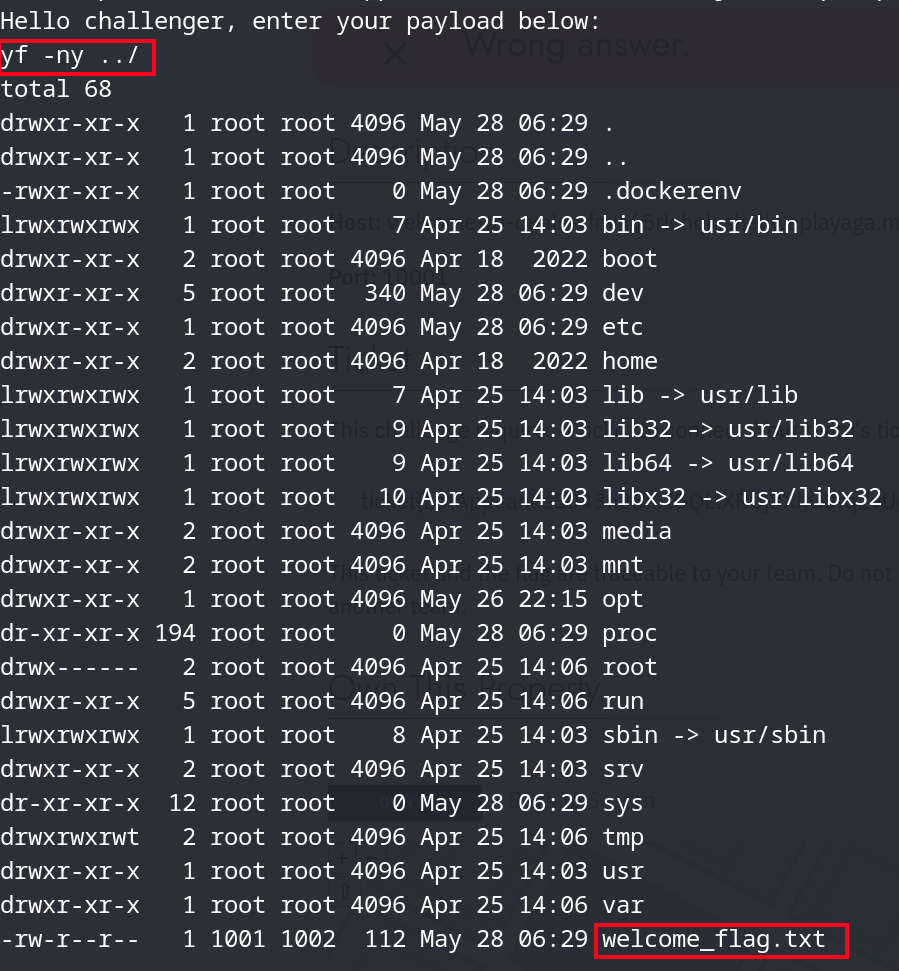
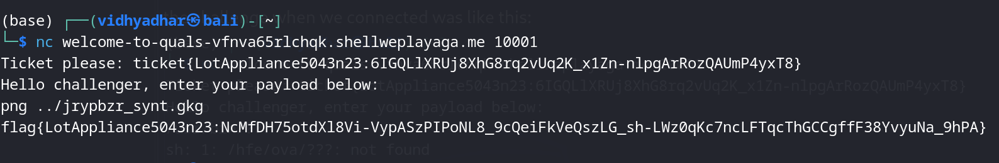

the challenge when we connected was like this:

when I saw that the command being executd was: something different , I immediately understood it was cipher -> that too shift
and the shift was: 13
the ls commad was: -> yf
# we needs to make a shift cipher:
def encrypt_text(plaintext,n):
ans = ""
# iterate over the given text
for i in range(len(plaintext)):
ch = plaintext[i]
# check if space is there then simply add space
if ch==" ":
ans+=" "
# check if a character is uppercase then encrypt it accordingly
elif (ch.isupper()):
ans += chr((ord(ch) + n-65) % 26 + 65)
# check if a character is lowercase then encrypt it accordingly
else:
ans += chr((ord(ch) + n-97) % 26 + 97)
return ans
plaintext = input("cmd: ")
n = 13
print("Plain Text is : " + plaintext)
print("Shift pattern is : " + str(n))
print("Cipher Text is : " + encrypt_text(plaintext,n))

so when we poke around a bit with " ls -al ../ " , in the server:

we get the flag:
